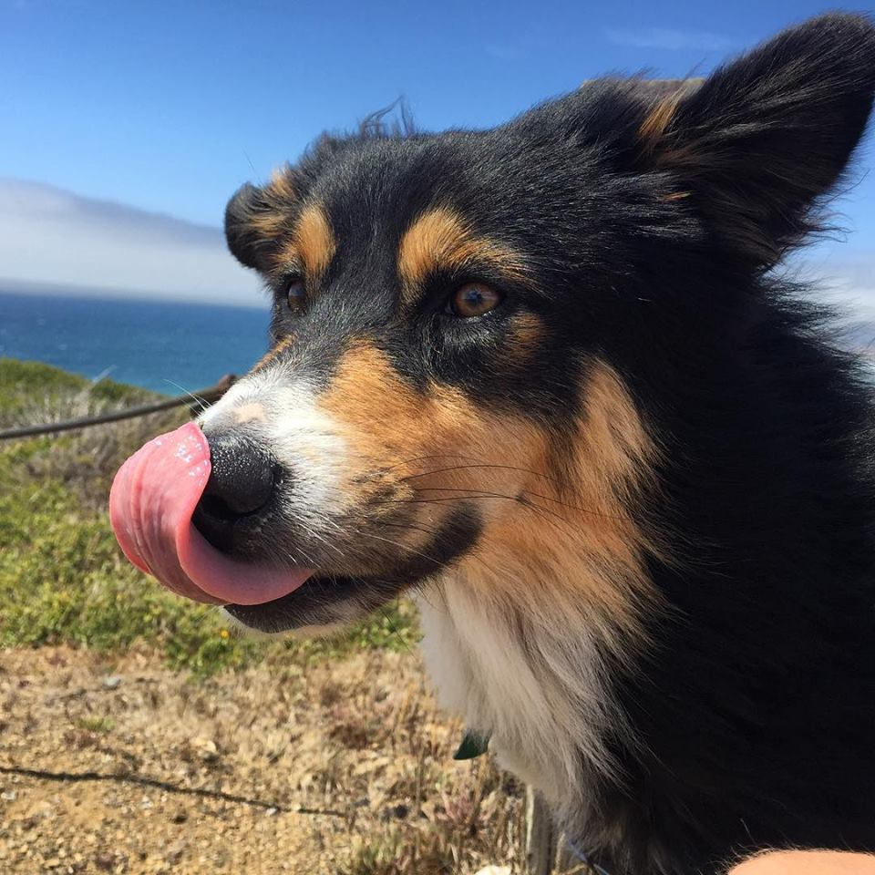
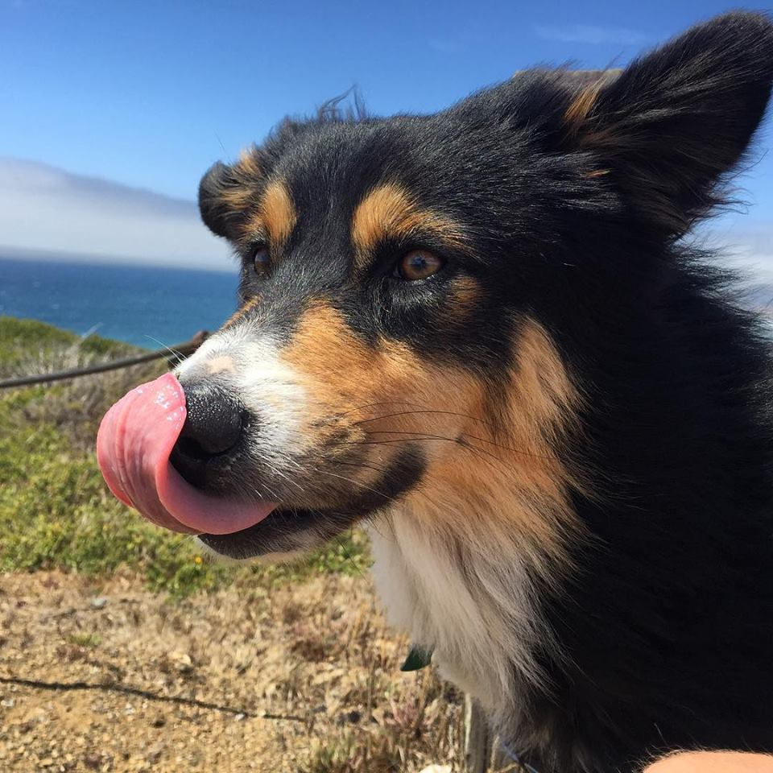

Jason Ainsworth
 

Job Experience
Made In Space
Executive Assistant
July 2014 - Feb 2015
- Worked exclusively for Mike Chen, Co-Founder of Made In Space, as his executive assistant
- Handled all email on Mike Chen’s behalf with high profile companies and internal/external contacts
- Managed projects which included marketing, scheduling, and organization
Magic
Operations Manager
Feb 2015 - July 2015
My role at Magic was floor manager and then sales manager. I was recruited by former employer and co-founder, Mike Chen and was at Magic since the beginning. My team would handle all the high profile requests and clients such as Ashton Kutcher, Justin Kan, and Patrick Collison. I helped manage operations such as identifying and defining new roles, training new hires, and creating more efficient task management strategies. I became proficient in internet research and problem solving on the fly while also finding and executing solutions to complex tasks on a daily basis.
Kalisher
Creative Traffic Manager
Sept 2015 - Feb 2016
- Analyzed art requests for accuracy and direction, assigned daily art requests to a team of 6 artists and 2 curators, created and managed their daily schedule that had to adhere to strict deadlines that were constantly changing
- Acted as mediator between the creative department and accounting team with artwork complications, setbacks, and rush requests
- Worked directly with the creative director to optimize workflow and provide solutions to traffic issues
Empey Realty
Director of Operations and Marketing
May 2016 - Feb 2017
- Managed luxury vacation rentals
- Created and implemented social media marketing campaigns
- Designed,organized, and automated a client follow-up plan
- Maintained the Wordpress website and built landing pages via Thrive Themes
Education
- Jupiter High School - Jupiter, FL - High School Diploma
- San Diego Mesa College - San Diego, - Associates in Sociology CA
Why I'm Interested In Programming
I love programming and am highly interested in it because of logic and reasoning behind the code. I find it very exciting to learn and understand the way things work.
The Things I Love
- My Dog
- Skydiving
- My Friends
- Off-Roading
- Surfing
- Snowboarding
- Camping
- Cooking
- Video Games